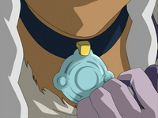

The Water Tribe is a general term defining the practice of waterbending among
its nation of people. The people of the Water Tribe live in the North and South
Pole. However, Team Avatar discovered a group of waterbenders called the
Foggy Swamp people in the Earth Kingdom. Although the Water Tribe people have a
peaceful nature, all three groups were major players in the critical battles near
the end of the Hundred Year War. The Northern Water Tribe was responsible for a
major defeat of the Fire Nation Navy, killing on of the Fire Nation's most notable
commanders, Admiral Zhao. The Southern Water Tribe and Foggy Swamp Tribe were both
apart of the invasion of the Fire Nation on the Day of Black Sun.
Culture

Betrothal necklace
The outward appearance of the Water Tribe people is based on their analogous element, water.
Each nation have a unique elemental color, which the Water Tribes color is blue. An exception
to this rule are the Foggy Swap Tribe who wear green because of their fondness for plants.
Northern Water Tribe women traditionally marry at the age of sixteen. Males who wish to marry
females gift them with a traditional betrothal necklace which indicates that the woman is married.
These marriages and the ceremonies are arranged by the parents while Southern Water Tribe members
can choose who they marry.
Southern Water Tribe children go through a rite of passage known as ice dodging when they turn fourteen.
Ice dodging is when the children must control a ship in turbulent water populated with large, dangerous
chunks of ice. After the ritual is complete, they are given marks of honor: the Mark of the Brave, the
Mark of the Wise, and the Mark of the Trusted. In early 100 AG, Katara, Sokka, and Aang respectively
earned these marks.
Techniques
Waterbending moves
Waterbending done through the hydrokinetic ability to control water in all of its various states.
The element of water represents change. The source of a waterbender's power comes from the moon.
The first waterbenders learn their technique by studying how the moon pushed and pulled tides.
Waterbenders are the only people who did not learn to bend from animals although the Moon and
Ocean Spirits adopted the form of koi fish in the mortal world. The fighting style of waterbending
is typically fluid and graceful, acting in concert with the environment while Foggy Swamp style waterbending
is more rigid and straight. Waterbenders deal with the flow of energy; they let their defense become their offense,
turning their opponents' own forces against them. Even when waterbenders do take an attack stance,
their moves always appear to flow from one to the other.
Fire Nation Raids
Southern raiders
The Southern Tribe's waterbending traditions were almost lost due to Fire Nation raids.
The Northern Water Tribe on the other hand has successfly been able to stave off the Fire
Nation for more than eighty-five years because of a mixture of strong, man-made defenses
and an imposing, and its icy landscape.